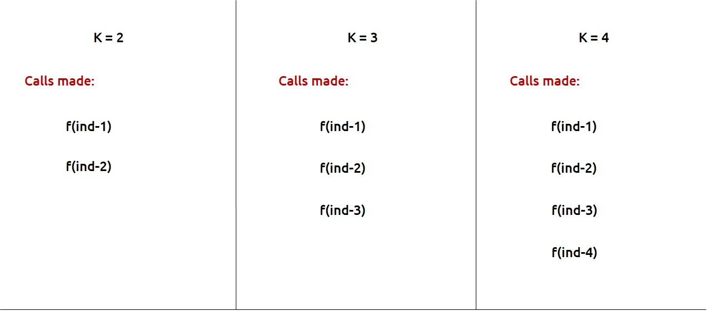

JB TAK FODEGA NHI .... TB TK CHODEGA NHI .... (MAANG)


DPL4 Frog Jump with K Distance
This is a follow-up question to “Frog Jump” discussed in the previous DPL3. In the previous question, the frog was allowed to jump either one or two steps at a time. In this question, the frog is allowed to jump up to ‘K’ steps at a time. If K=4, the frog can jump 1,2,3, or 4 steps at every index.
We will first see the modifications required in the pseudo-code that we learn in DPL3. Once the recursive code is formed, we can go ahead with the memoization and tabulation.
Here is the pseudocode from the simple DPL3 Lecture.

This was the case where we needed to try two options (move a single step and move two steps) in order to try out all the possible ways for the problem. Now in this problem we need to try K options in order to try out all possible ways.
These are the calls we need to make for K=2, K=3, K=4

Recursice Approch
If we generalize, we are making K calls, therefore, we can set a for loop to run from 1 to K and in each iteration we can make a function call, corresponding to a step. We will return the minimum step call after the loop.
Once we form the recursive solution, we can use the approach told in Dynamic Programming Introduction to convert it into a dynamic programming
.png)
.png)
Sb Mai He Kru ...
Khud Bhi Kr le Khuch ..... Nalayk
Time & Space Complexity
Time Complexity: O(2 ^ N)Reason: Exponential Time we find out the all the Possible Path
Space Complexity: O(N)
Reason: We are using a recursion stack space(O(N))
Memoization Approch
Steps to convert Recursive code to memoization solution:.png)
.png)
Sb Mai He Kru ...
Khud Bhi Kr le Khuch ..... Nalayk
Time & Space Complexity
Time Complexity: O(N * K)Reason: The overlapping subproblems will return the answer in constant time. Therefore the total number of new subproblems we solve is ‘n’. At every new subproblem, we are running another loop for K times. Hence total time complexity is O(N * K).
Space Complexity: O(N)
Reason: We are using a recursion stack space(O(N)) and an array (again O(N)). Therefore total space complexity will be O(N) + O(N) ≈ O(N)
Tabulation Approch
Tabulation is a ‘bottom-up’ approach where we start from the base case and reach the final answer that we want and Memoization is the Top-down Approch.Steps to convert Recursive Solution to Tabulation one.
.png)
.png)
Sb Mai He Kru ...
Khud Bhi Kr le Khuch ..... Nalayk
Time & Space Complexity
Time Complexity: O(N*K)Reason: We are running two nested loops, where outer loops run from 1 to n-1 and the inner loop runs from 1 to K
Space Complexity: O(N)
Reason: We are using an external array of size ‘n’.
Space Optimization
Space Optimization is Not Possible in this Problem Why ?
This is the region we can not Space Optimized these Types of problems we can do it using the concept of the kth Subarray every ith Iteration [ But uska koi fayda hoga nhi baat braabr hai O(N) kee in worst case ]